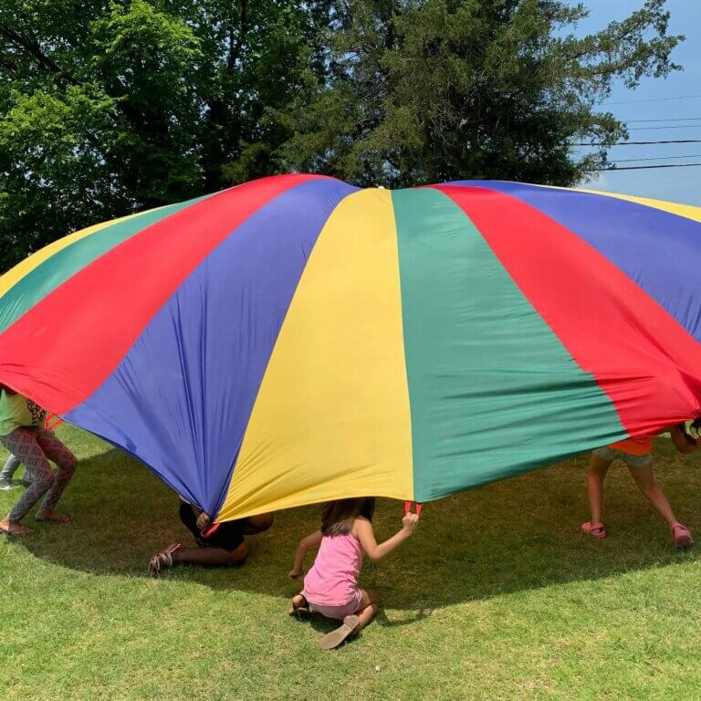
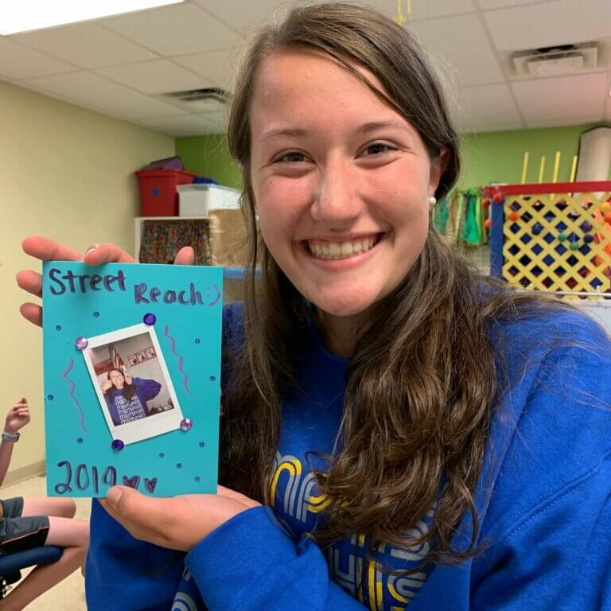

<section class="faith-about-area section-padding-100-0 darkbg">
    <div class="container">
        <div class="row">
            <div class="col-12">
                <div class="about-content">

                    
                    <h2 class="welcomeTitle">St Paul's Youth</h2>
                    <div class="container">
                        <div class="row">

                            <!-- Single Ministry Area -->
                            <div class="col-12 col-md-6">
                                
                            </div>
                            <div class="col-12 col-md-6">
                                
                            </div>
                            <div class="col-12 col-md-6">
                                
                            </div>
                            <div class="col-12 col-md-6">
                                
                            </div>

                        </div>

                    </div>

                    <div class="row">
                        <br>
                        <div class="col-12 text-left">
                            <hr>
                            <h3>Jr. High & Sr. High Youth</h3>

                            <p>
                                St. Paul’s Youth is an active group of 6th – 12th grade students who are growing in their faith and love for Jesus together.   We are dedicated to empowering teens across Staunton to a better future through fun, friendship and a personal relationship with Jesus. Open to all high school and middle school students. Our weekly gatherings are relaxed and welcoming, encouraging youth to be all that God has made them to be.
                            </p>
                            <p>
                                We strive to provide a safe and comfortable environment that allows our students to:
                            </p>
                            <ul style="list-style: circle;" class="bulletList">
                                <li class="bulletList">experience the fullness of God through worship and scripture reading</li>
                                <li class="bulletList">connect with each other and the church </li>
                                <li class="bulletList">serve the local and global community </li>
                            </ul>
                            <br>
                            <p>
                                We want our students to understand that God created each and every one of them in His image with their own unique gifts and that His love for them is unfailing!  Our students are a vital part of our congregation and we are committed to keeping them connected with the local church as their relationship with God grows deeper.
                            </p>

                            <h4>Sunday Night Gatherings</h4>
                            <p>We meet Sunday Nights in the Family Life Center each Sunday Night from 6:00 - 7:30pm</p>
                            <p>We practice social distancing and everyone wears face masks at all time</p>
                            <p>For more information, email our Youth Director, <a href="mailto:parkerdell94@gmail.com">Parker Dell</a></p>

                            <a href="https://www.instagram.com/st.paulsyouth/" style="color:red">Follow us on Instagram <i class="fa fa-instagram"></i></a>
                            <br>
                            <hr>
                            <h4>Upcoming Events</h4>
                            <hr>
                            <h5>December</h5>
                            <ul>
                                <li><strong>Dec. 6 </strong>- 1:30:00-4:00 pm -Little Town of Bethlehem  @ St Paul's- Youth will be participating as cast</li>
                                <li><strong>Dec. 13 -  2:00-4:00</strong> pm -  Packing Blessing Bags - Jr and Sr High Youth groups ( Also the rain date for Little Town of Bethlehem)
                                </li>
                                <li>
                                    <strong>Dec. 20 -</strong> No Youth, Parker is getting Married

                                </li>
                                <li><strong>Dec. 27</strong> - No Youth, Christmas break</li>
                            </ul>
                            <hr>
                            <h5>Janurary</h5>
                            <p>Bible study of Luke each Sunday evening from 6-7:30</p>
                        </div>

                    </div>


                </div>
            </div>
        </div>
    </div>
</section>
